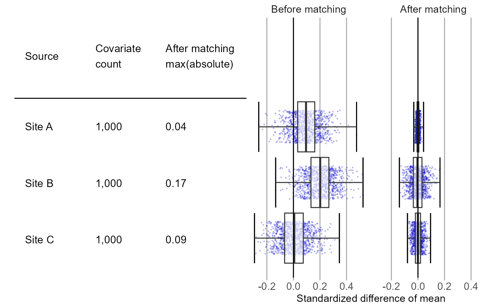

plotCovariateBalances plots the covariate balance before and after matching for multiple data sources.
plotCovariateBalances( balances, labels, threshold = 0, beforeLabel = "Before matching", afterLabel = "After matching", fileName = NULL )
| balances | A list of covariate balance objects as created using the
|
|---|---|
| labels | A vector containing the labels for the various sources. |
| threshold | Show a threshold value for the standardized difference. |
| beforeLabel | Label for before matching / stratification / trimming. |
| afterLabel | Label for after matching / stratification / trimming. |
| fileName | Name of the file where the plot should be saved, for example 'plot.png'. See the
function |
A Ggplot object. Use the ggsave function to save to file.
Creates a plot showing the covariate balance before and after matching. Balance distributions are displayed as box plots combined with scatterplots.
# Some example data: balance1 <- data.frame(beforeMatchingStdDiff = rnorm(1000, 0.1, 0.1), afterMatchingStdDiff = rnorm(1000, 0.0, 0.01)) balance2 <- data.frame(beforeMatchingStdDiff = rnorm(1000, 0.2, 0.1), afterMatchingStdDiff = rnorm(1000, 0.0, 0.05)) balance3 <- data.frame(beforeMatchingStdDiff = rnorm(1000, 0.0, 0.1), afterMatchingStdDiff = rnorm(1000, 0.0, 0.03)) plotCovariateBalances(balances = list(balance1, balance2, balance3), labels = c("Site A", "Site B", "Site C"))#> TableGrob (1 x 2) "arrange": 2 grobs #> z cells name grob #> 1 1 (1-1,1-1) arrange gtable[layout] #> 2 2 (1-1,2-2) arrange gtable[layout]